It may be worthwhile at the outset to note that although low Reynolds number expansions for unbounded domains, e.g. viscous flow past a solid sphere (Lamb 1932, p. 609; Van Dyke 1964, ch. 8), are singular perturbation problems, this is not the case for bounded domains (Munson & Joseph 1971). This makes sense: the region of nonuniformity in the former class of problems, where the neglected inertial terms are not negligible in comparison to the retained viscous terms, is typically a neighbourhood of the point at infinity.
Assume asymptotic expansions for the vapour mass fraction, velocity,
pressure and temperature of the form:
| 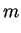 | 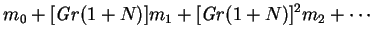 | (8.10) | |
| 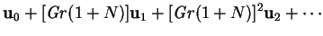 | (8.11) | ||
| 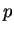 | (8.12) | ||
| 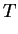 | 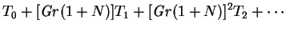 | (8.13) |
Substituting these in to the low mass transfer rate equations,
(6.16)-(6.19), and taking the limit
 leads to a hierarchy of problems:
leads to a hierarchy of problems:
| 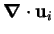 | (8.19) | ||
| 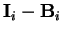 | 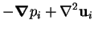 | (8.20) | |
| 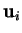 | 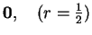 | (8.21) |
The series for , and are to be taken as zero if the lower index (zero) exceeds the upper; i.e. when 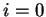. Each 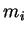 and 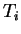 satisfies a Laplace or Poisson equation, with source given in terms of previously calculated quantities. These are, in principle, all soluble by expanding the source term and the independent variable in spherical harmonics. For the equations of motion, however, the presence of the unknown pressure terms and the continuity constraints means that at each order a Stokes problem with known `body force' must be solved. The Stokes problem in a sphere can be reduced to an uncoupled unconstrained set of scalar partial differential equations (Poisson and inhomogeneous biharmonic equations) by decomposing the velocity term into its poloidal and toroidal parts. This technique is summarized in appendix B.
The evaluation of  may be tedious, but can be simplified by
noting that except for 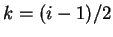 the terms of the series occur in pairs:
may be tedious, but can be simplified by
noting that except for 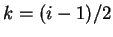 the terms of the series occur in pairs:
| 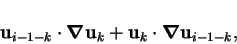 | (8.24) |
| 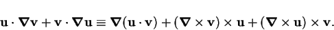 | (8.25) |